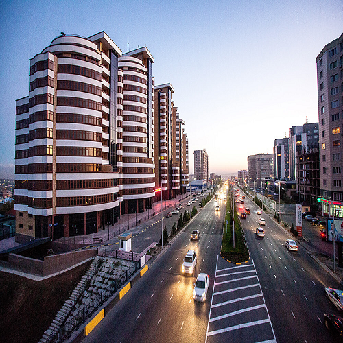
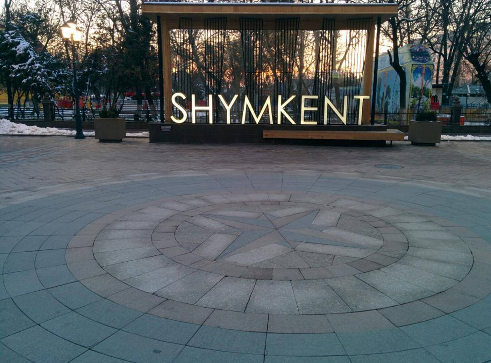
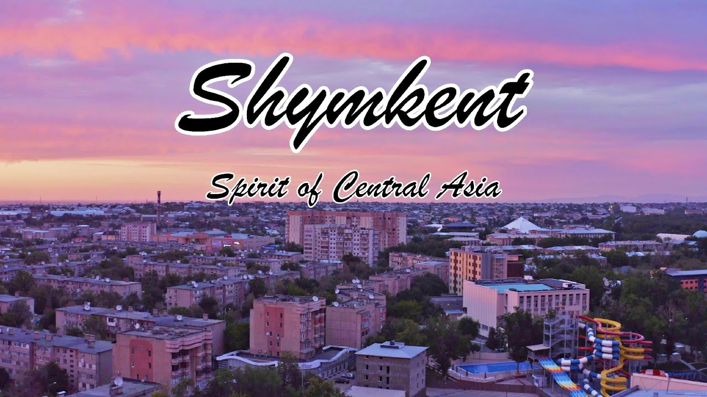
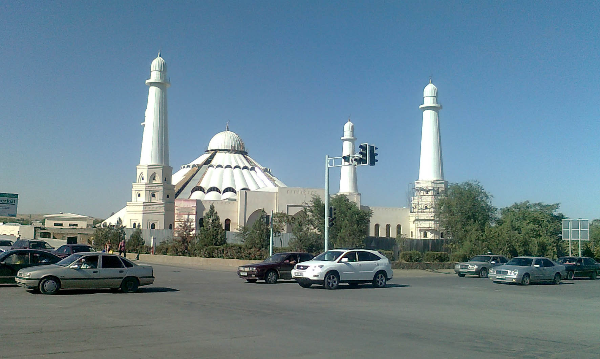

Shymkent is a city in Kazakhstan which is near the border with Uzbekistan. It is one of three Kazakh cities which have the status equal to that of a region (“city of republican significance”). It is the third-most populous city in Kazakhstan, behind Almaty and Astana, with an estimated population of 1,002,291 as of 1 June 2018. According to regional and city officials, the millionth resident of Shymkent was born on 17 May 2018. It is a regional cultural center.

The name Chimkent comes from two Sogdian words, chim (meaning 'turf') and kent (or kand) (meaning 'city') (also found in the name of nearby Toshkent); thus, it literally means "the city in the grass/turf."
After Kazakhstan gained independence, the city was renamed Shymkent in 1993 as part of the government's campaign to apply Kazakh names to cities. The formal spelling of Shymkent, as codified in Kazakhstan's Constitution, goes against the original Uzbek spelling rules of never having the letter "ы" follow the letter "ш". (Uzbek itself has no letter ы. Furthermore, what is spelled as ш in Kazakh is spelled as ч in Uzbek.) As a result, the new name Шымкент (Shymkent) is used only in Kazakhstan, while other countries continue to use the original spelling Чимкент (Chimkent).

According to a government estimate in 2012, the city had 669,326 inhabitants.[14] In 2009, the population of Shymkent was 603,499 (2009 Census results); in 1999, it was 423,902 (1999 Census results. By the beginning of 2015, Shymkent was joined by the areas of adjacent districts. In this connection, the city population has increased up to 858,147 people within the new boundaries by the beginning of 2015. By that time, 711,783 people resided in the former area of Shymkent. By 1 June 2018, the population of Shymkent was 1,002,291.

Islam is the most widely practiced religion in Shymkent.

Here is a list of religions that people practice in Shymkent: